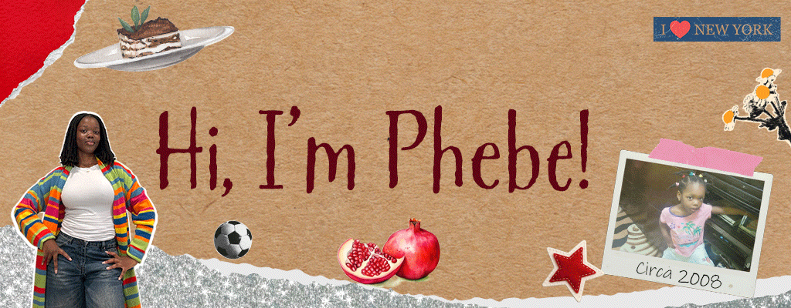

Phebe's Biography

Personal Information
I'm a graphic design major and I am interested in the way design impacts people’s experiences and preferences with
apps and websites.
Here are some things I'm proud of!
- Python Programming Certificate
- Adobe Photoshop Certificate
- Worked on UX/UI Team for Pixels & Print 2025
- Interned for the Baldwin Fund
My favorite tv show changes, but as of now it is How I Met Your Mother. I am a huge marvel fan , my favorite movie is
Thor: Ragnarok, Avengers Infinity war is a close second. I love to rewatch A Series of Unfortunate Events with my
sister, it’s based off a book series we both loved in middle school. I am getting into baking, especially since my
favorite season (fall) is coming up.
Fun fact: I have been a pescetarian for about 4 years now!
© 2025